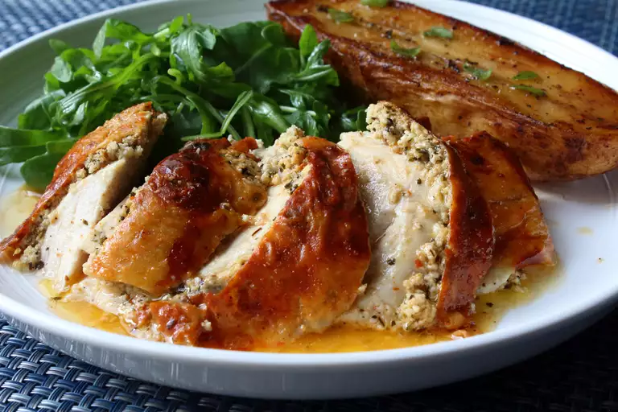

Feta Roast Chicken

Roast chicken is chicken prepared as food by roasting whether in a home kitchen, over a fire,
or with a rotisserie (rotary spit). Generally, the chicken is roasted with its own fat and
juices by circulating the meat during roasting.
Therefore, they are usually cooked exposed to fire or heat with some type of rotary grill so
that the circulation of these fats and juices is as efficient as possible. Roast chicken is
a dish that appears in a wide variety of cuisines worldwide.
Ingredients
- 1 (4 ounce) package feta cheese
- 3 cloves garlic, crushed
- ½ teaspoon red pepper flakes, or to taste
- 1 teaspoon freshly ground black pepper
- 1 lemon, zested and juiced
- 2 teaspoons dried oregano
- 3 tablespoons olive oil, or as needed
- 1 (5 pound) whole chicken
- salt to taste
- 2 sprigs fresh rosemary
- 2 sprigs fresh oregano
- kitchen string
- 2 teaspoons olive oil
- 1 pinch cayenne pepper
- kosher salt to taste
- 2 tablespoons chicken broth, or as needed
Steps
- Crumble feta cheese into a bowl. Add garlic, red pepper flakes, black pepper, lemon zest, oregano, and 3 tablespoons olive oil. Mix and smear into a smooth paste with the back of a spoon. Reserve lemon juice for the sauce.
- Preheat the oven to 400 degrees F (200 degrees C).
- Season chicken cavity with salt and stuff rosemary and oregano inside. Tie legs together with string, season surface with salt, and tuck wingtips under. Place chicken in a roasting pan.
- Tuck fingers under the skin where the breast starts and lift it away from the flesh. Push a small rubber spatula between the skin and flesh and continue loosening the skin all the way down towards the wing. Repeat on the other side. Push a spoonful of the feta filling under the skin. Smooth over the surface of the skin to distribute filling evenly underneath. Repeat until filling is used up.
- Rub 2 teaspoons olive oil onto the chicken, smoothing over the skin. Dust the top with cayenne and season with kosher salt.
- Roast in the preheated oven until juices run clear and an instant-read thermometer inserted into the thickest part of the thigh registers 155 to 160 degrees F (68 to 71 degrees C), about 1 hour and 10 minutes. Let rest for 15 minutes.
- While the chicken is resting, pour off all, some, or none of the fat from the pan, and add lemon juice. Set over medium heat, and use the juice to deglaze the browned bits from the bottom of the pan. Add a splash of broth and adjust seasonings. Slice chicken and spoon sauce on top.